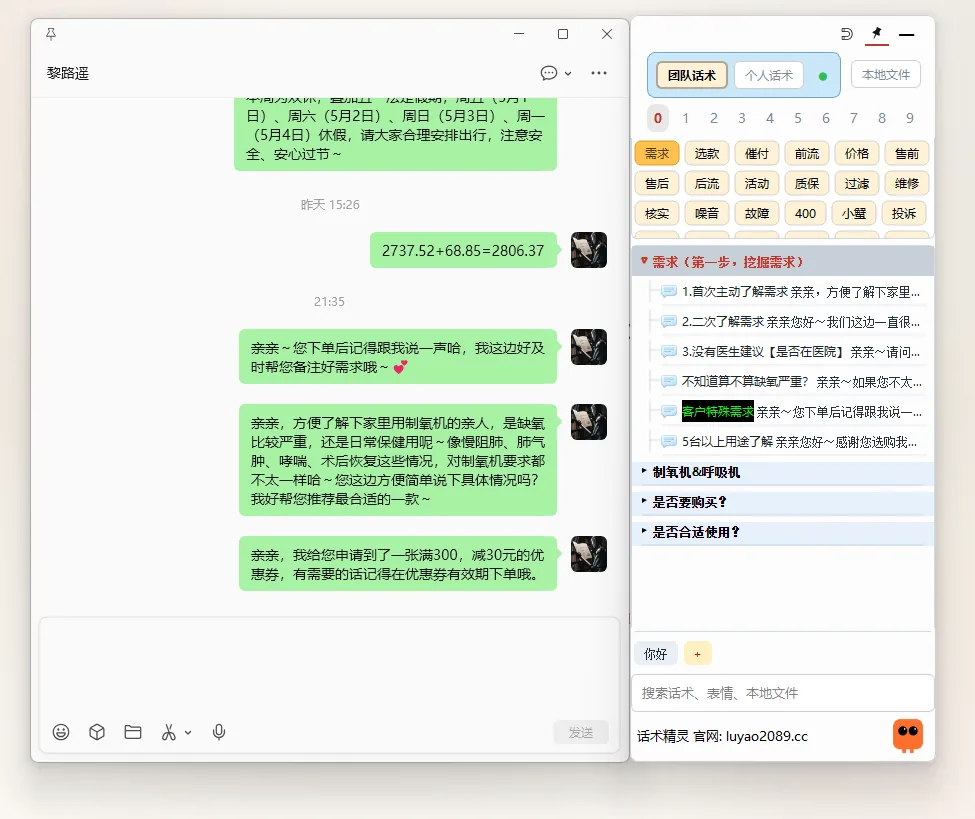

场景分类
售前、成交、售后各自成目录，查找路径更短。
电商客服话术工具
话术精灵 SoftTalk 是一款 Windows 桌面工具：常用话术按场景整理，双击直接发送，内容保存在本机。
按场景分类录入，一次整理长期受用。
面板悬浮在屏幕右侧，不遮挡聊天窗口。
双击话术卡片，内容自动填入并发送。
左边是客服聊天窗口，右边是话术精灵主界面：单击选中话术，双击直接发送。
老板，这款产品质量怎么样，是正品吗？
下载安装后，面板悬浮在屏幕右侧，不遮挡聊天窗口。

售前、成交、售后各自成目录，查找路径更短。
输入关键词即可定位话术，也能搜本地文件。
内容保存在本机，改动后按天自动备份，不依赖网络。
天猫、京东、拼多多、抖音等电商客服场景，也适合任何高频客户咨询岗位。
售前咨询、成交跟进、售后处理、安抚表达、服务规范等团队常用内容。
按目录查找和检索即可，不必先翻一遍历史聊天记录。
默认保存在本机，改动后按天自动备份；需要多人协同时可开通云端功能。